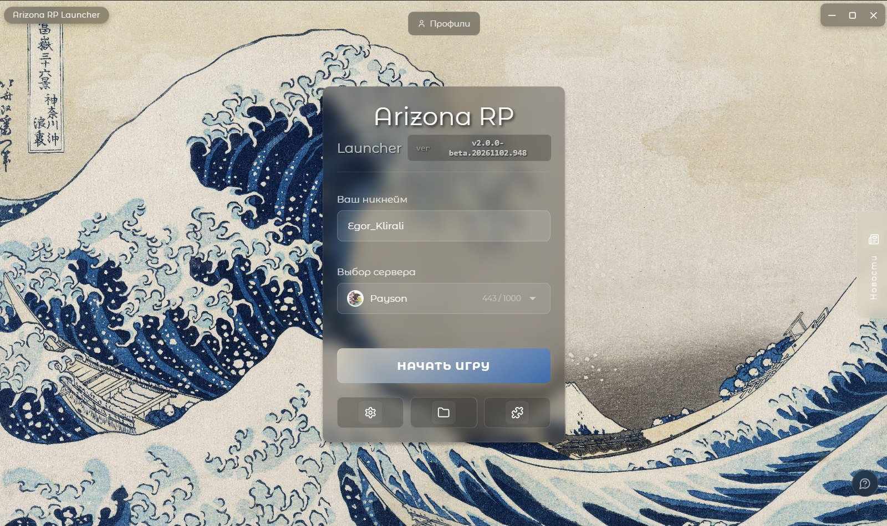
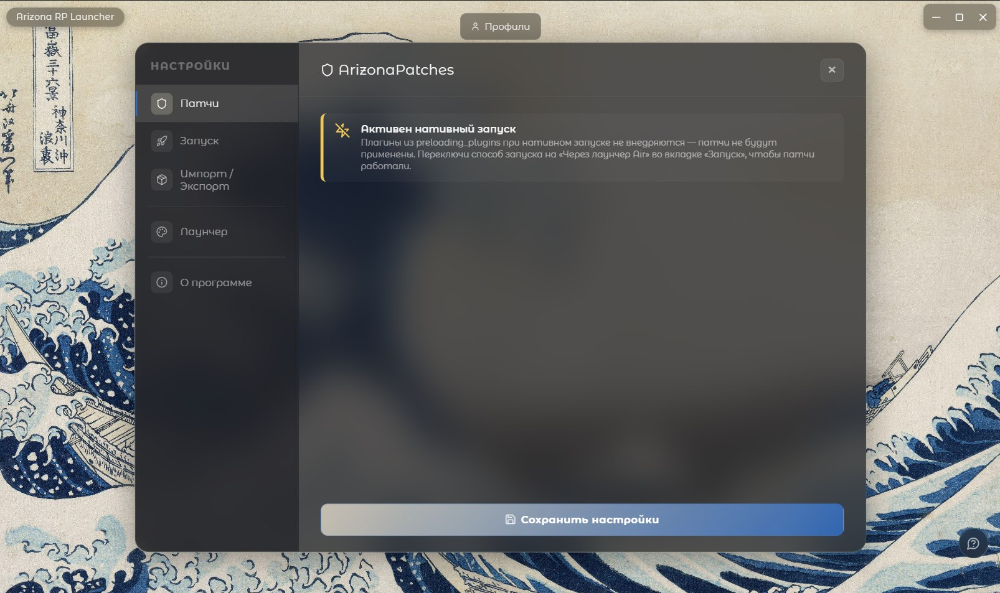
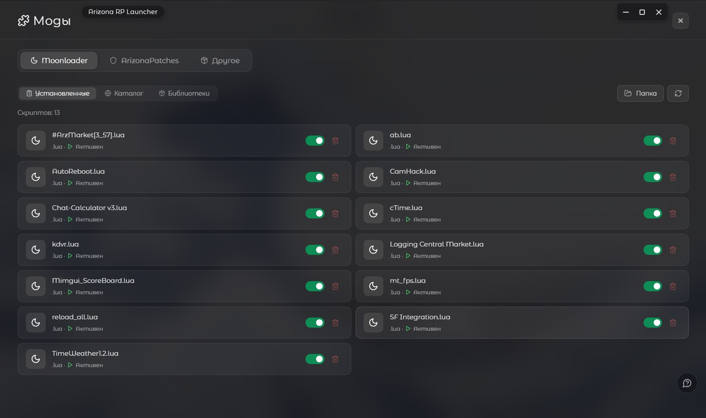
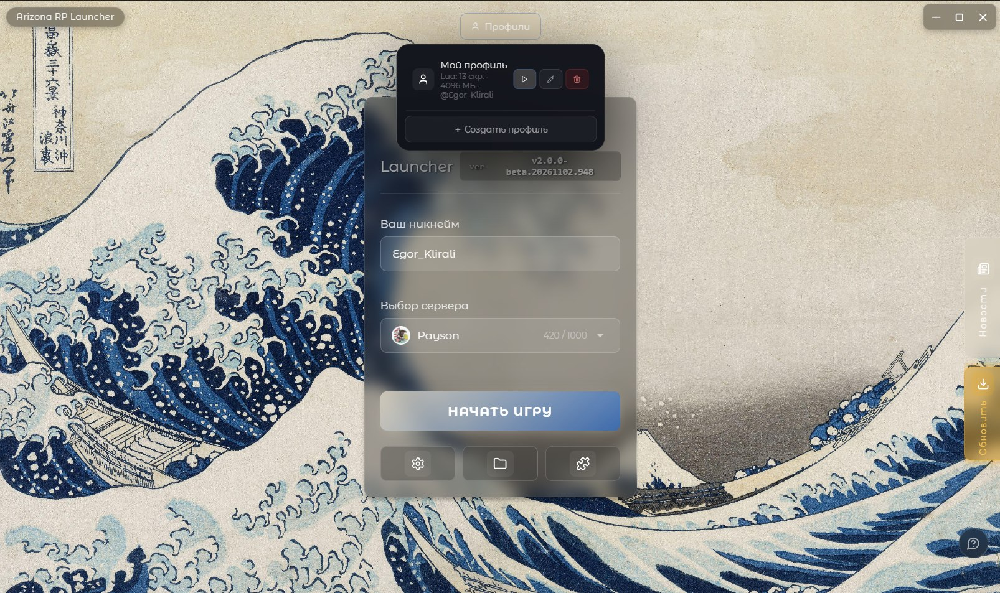

Два режима запуска
Нативно без патчей или через лаунчер Air с плагином. Работа с плагином пока не готова, так что «выбор без выбора» — сейчас только нативный режим.
Запуск игры в два клика, патчи, каталоги модов и профили — без прав администратора, на Rust + Tauri 2.
свежий релиз — v2.0.0-beta.1



Нативно без патчей или через лаунчер Air с плагином. Работа с плагином пока не готова, так что «выбор без выбора» — сейчас только нативный режим.
Разные наборы настроек, сохранение никнейма и сервера — переключение в один клик.
Патчи вызывают краши игры, поэтому лаунчер сам вырубает dll. Настроек патчера пока нет — сорри.
Луаскрипты, библиотеки MoonLoader и дополнительные файлы обновляются без перевыпуска лаунчера.
Встроенная коллекция плюс свои изображения — интерфейс подцветится под обои.
Рамка окна в стиле лаунчера, сворачивание в трей, онлайн серверов в реальном времени и лог для диагностики.
Windows 10/11 x64 • установка без прав администратора • WebView2 ставится автоматически
Установщик без цифровой подписи: SmartScreen может предупреждать при первом запуске — нажмите «Подробнее», затем «Выполнить в любом случае».
Исходный код открыт: лаунчер собирается в CI из публичного репозитория на каждый коммит, вы сами можете собрать его из исходников.
Нет. Установка и работа идут от имени текущего пользователя, прав админа не требуется.
Нативный запуск работает вообще без Air. Air нужен для будущего режима с плагином — когда доработаем, поддержка будет только у Air v8.
Сейчас применение патчей вызывает краши игры, поэтому лаунчер сам вырубает dll после игры. Настройки патчера появятся в будущих версиях.
Documents\ArizonaLauncher\launcher.log — или кнопка «Открыть лог» прямо в лаунчере.
Популярнее всего донаты — реквизиты чуть ниже. Открытые PR и баг-репорты приветствуются так же.
Лаунчер бесплатный и Open Source. Любая поддержка помогает мне откладывать деньги на оборудование и дальше развивать проект.
bc1pfk8stmu8ttutwvcegg8hkdaaqfs3t83wrlc4fnv7a934mac59m6qnrx5v30x9a7f1a6f1E2F18c6493aB1B51A742aB161507Ba3HAkjcc35TKD4txDjtQ75jZBPk4eNtecGtAW45a78SCeN